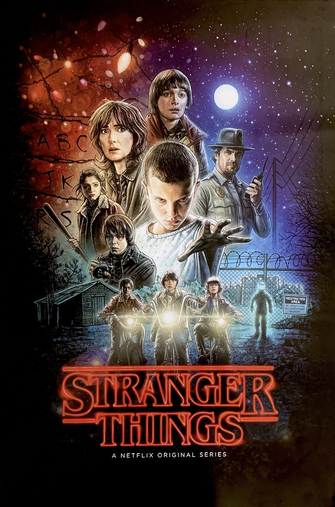
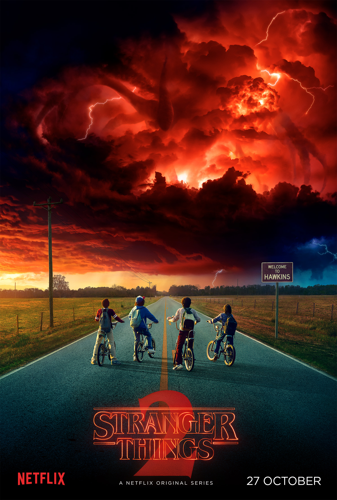
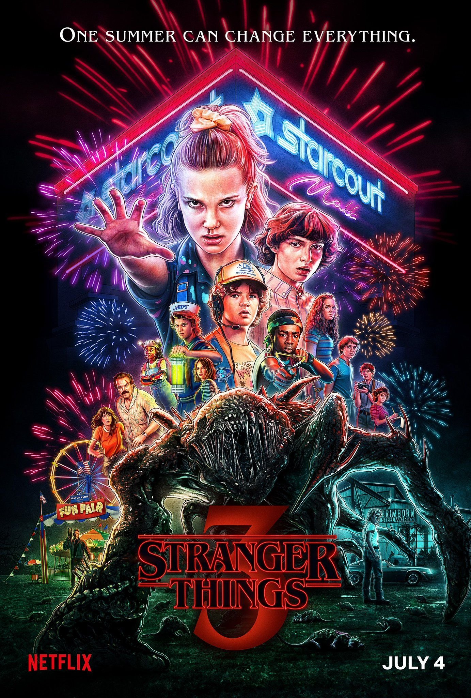
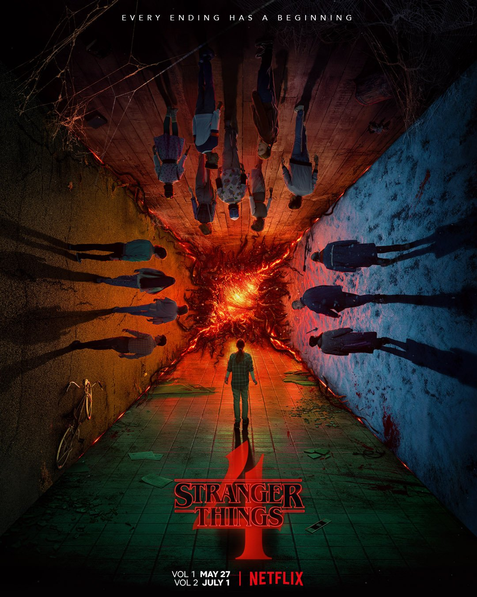

O drama se passa no início dos anos 80, com o desaparecimento de um garoto, Will Byers na velha cidade de Hawkins, Indiana após uma partida de RPG, então tudo começa a fugir do normal. Os melhores amigos de Will, Mike Wheeler, Lucas Sinclair e Dustin Henderson se juntam para uma investigação sobre o sumiço do garoto,até que eles conhecem uma nova amiga, que se junta ao grupo de nerds e ajuda na procura.
Eleven é uma garota que foi tirada de sua mãe na maternidade e era usada para experimentos científicas desumanos no laboratório de Hawkins do Dr. Martin Brenner, quem Eleven desde pequena tinha como figura paterna. Ela possuia algo muito poderoso, superpoderes psíquicos, movia objetos com a mente através da telecinésia e com a telepatia, se comunicava com as pessoas. Ninguém sabe a origem de seus poderes, só sabem que existem mais pessoas especiais como ela e que também tem números gravados em sua pele que servem como uma identificação ou até um nome no caso de 011, cada criança possui um poder diferente, que em mãos erradas podem causar um grande desastre.
Após acionarem o delegado de polícia Jim Hopper, essa galera se junta e descobrem que eles não estão sozinhos, há criaturas sinistras que podem estar bem debaixo de seus narizes. O mundo invertido, é uma dimensão espacial paralela que coexiste com a nossa própria, nela existem demogorgons-criaturas homanóides- que através de um portal que se abriu permitiu que eles pudessem passar para o mundo em que vivemos, fazendo pessoas de reféns, levando-as para o Upside Down e matando-as. A grande missão dessa turma de amigos é resgatar Will e derrotar os monstros, mantendo os cidadãos de Hawkins seguros.
É uma série incrível que prende o telespectador com seu suspense.



